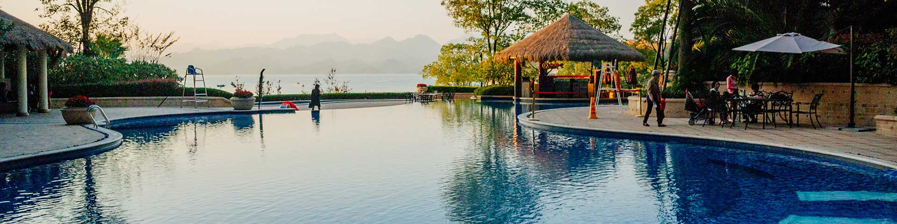
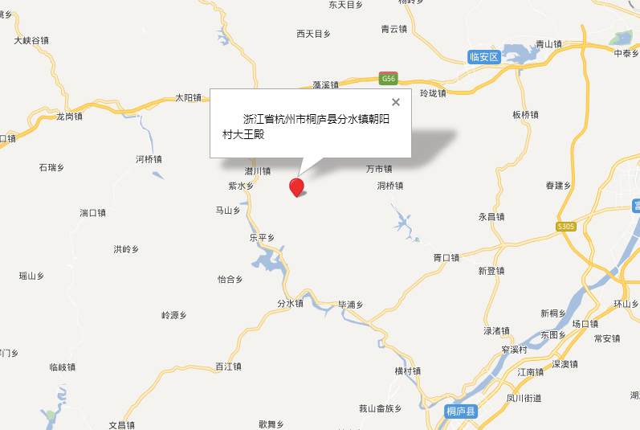

- 


海龙王的故事
海龙村的丹石岩山峰，海拔479米高，春季山峰顶部漫山的野樱花、红色的杜鹃花，甚是壮观；深秋的时节里，山色呈五彩缤纷之势，秋色甚美。山顶上视眼开阔，临安、富阳两地附近的村落尽收眼底。山峰顶部有大小石洞十余个，洞内泉水常年不断。从太平天国开始，山顶洞中就供奉着“海龙王”牌位。於潜、昌化、桐庐、新城等地百姓，凡大旱之年都纷纷前来求拜“海龙王”，并抬上“龙王”放置田畈里让其暴晒，俗称“晒龙王”，祈求降雨免灾。待雨水落通后，成群结队的百姓，手持彩旗，敲锣打鼓送“龙王”归洞。该习俗从大清到民国年间一直都有，直到解放后才停止。
竺岭古道
浮云岭山脚下的桥头村（今海龙村）是古时新城通往於潜“竺岭古道”的主要落脚点，浮云岭位于临安和富阳的交界地，海拔有300多米高，山顶常年云雾缭绕，是徽商通过於潜到富阳再到杭州的陆路主要通道，岭顶建有浮云亭，亭内常年备有茶水供路人休息享用，路过的行人多投宿於浮云岭脚下的桥头村
苏东坡与海龙村的故事
宋代苏东坡任杭州通判期间，公元1074年8月25日，时年39岁的苏东坡从杭州出发去拜见忘年之交晁补之不遇，途经富阳新城，过青牛岭到浮云岭一路捕蝗，夜宿在浮云岭脚的桥头村（今海龙村），受到乡民的热情款待，品尝了农家自酿的米酒，有感而发作有《捕蝗至浮云岭山行疲苶有怀子由弟二首》，故有“久废山行疲荦确、尚能村醉舞淋浪。独眠林下梦魂好…”的绝世佳句。
沐浴温泉知识
沐浴温泉基本常识:1、沐浴温泉，请先沐浴洁身，以保持温泉水质卫生及让身体适应水温，另外洗去皮肤汗渍更容易吸引泉水中的矿物质。2、请到露天温泉区的宾客穿着泳装及拖鞋，露天属湿水区，请小心地滑。3、选择适合自己温度的温泉池浸泡，一般从温到热，每次浸泡15分钟左右即立上岸稍作休息后再浸泡（高温池不得超过10分钟）。4、初次浸泡不适应者或浸泡时间过长者，一般会出现口干或胸闷等不舒适感觉，此时应立即上岸稍作休息，饮杯水或饮料可舒缓不适。5、凡患有较严重的心脏病、高血压、身体不适或有身孕者均不宜入池浸泡，除非医生准许及有专人陪同方可。6、酗酒者不宜入池浸泡。7、浴后用清水冲洗身体，但不要用肥皂或浴液，以保存皮肤表面所吸收的矿物质。
- 上一页
- 1
- 下一页


关注火焰山 官方微信公众号
杭州云硒湖火焰山度假
地址：浙江省杭州市桐庐县分水镇
浙ICP备17002784号 | ?2016 Huazhu All Rights reserved.浙江火焰山度假村 浙公网安备31010502000192号